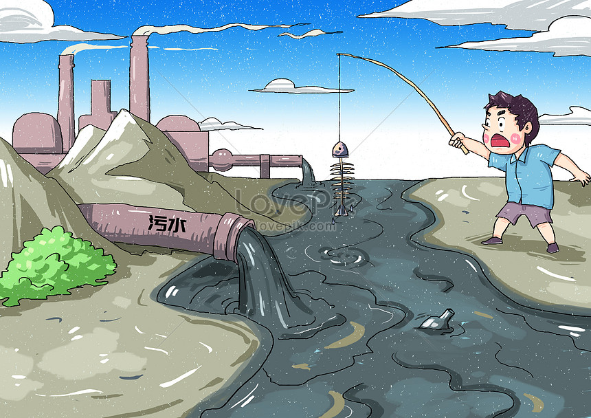

Hành Động Ngay Hôm Nay - Vì Môi Trường Sạch Đẹp
Môi trường là tài sản vô giá của chúng ta. Đặc biệt trong thời đại hiện nay, bảo vệ môi trường là trách nhiệm của mỗi người, đặc biệt là các bạn học sinh. Dù ở lứa tuổi nào, các bạn đều có thể tham gia vào các hoạt động bảo vệ môi trường và góp phần làm cho thế giới trở nên tốt đẹp hơn.
Để bảo vệ môi trường không cần phải làm những điều lớn lao, chỉ cần những hành động nhỏ trong cuộc sống hàng ngày như tiết kiệm nước, điện, hạn chế sử dụng đồ nhựa, tham gia các hoạt động dọn dẹp trường học hoặc cộng đồng. Chính các hành động nhỏ ấy có thể tạo ra thay đổi lớn khi chúng ta làm cùng nhau!
Giới Thiệu
Chúng tôi là một cộng đồng học sinh yêu môi trường, mong muốn chung tay cùng nhau bảo vệ thiên nhiên. Bảo vệ môi trường là một trong những vấn đề quan trọng của xã hội hiện nay, và việc bắt đầu từ học sinh chính là cách giúp cho tương lai của chúng ta tươi sáng hơn.
Mục tiêu của chúng tôi là tạo ra một không gian để các bạn học sinh có thể học hỏi về môi trường, chia sẻ các ý tưởng và tham gia vào các hoạt động bảo vệ thiên nhiên. Chúng tôi tin rằng, từ những hành động nhỏ, các bạn học sinh có thể làm được những điều to lớn, giúp bảo vệ hành tinh của mình.
Các Vấn Đề Môi Trường
Hiện nay, Trái Đất đang phải đối mặt với nhiều vấn đề môi trường nghiêm trọng. Các bạn học sinh có thể tham gia và góp phần vào việc giải quyết những vấn đề này ngay từ bây giờ. Dưới đây là một số vấn đề môi trường quan trọng mà chúng ta cần quan tâm:
-
Ô nhiễm không khí:
Khói bụi từ xe cộ, nhà máy và các hoạt động công nghiệp đang làm ô nhiễm không khí, gây ảnh hưởng đến sức khỏe của con người và sinh vật. Các bạn học sinh có thể góp phần giảm thiểu ô nhiễm bằng cách sử dụng phương tiện công cộng, đi bộ hoặc đi xe đạp thay vì xe máy.
-
Rác thải nhựa:
Nhựa là nguyên nhân chính gây ô nhiễm đại dương và các hệ sinh thái. Dù là học sinh, các bạn có thể giúp giảm thiểu việc sử dụng nhựa bằng cách mang theo bình nước cá nhân, túi vải khi đi mua sắm hoặc tham gia các chiến dịch thu gom rác thải nhựa trong cộng đồng.
-
Biến đổi khí hậu:
Biến đổi khí hậu là một vấn đề lớn do sự gia tăng lượng khí nhà kính. Các bạn học sinh có thể tham gia vào các hoạt động trồng cây xanh để giúp hấp thụ khí CO2 và bảo vệ môi trường sống.
-
Ô nhiễm nước:

Việc xả thải chất độc hại và rác thải ra các nguồn nước đang ảnh hưởng nghiêm trọng đến hệ sinh thái và sức khỏe con người. Các bạn có thể tham gia các hoạt động làm sạch các con sông, hồ hay tham gia chiến dịch bảo vệ nguồn nước sạch tại khu vực mình sống.
Đây là những vấn đề quan trọng mà chúng ta không thể bỏ qua. Mỗi người, dù là học sinh, đều có thể góp phần vào việc giải quyết những vấn đề này.
Làm tí video
Hãy xem video dưới đây để hiểu hơn về các hành động bảo vệ môi trường mà chúng ta có thể tham gia.
Các Dự Án Bảo Vệ Môi Trường Dành Cho Học Sinh
Chúng ta không chỉ đứng ngoài quan sát mà còn có thể tham gia vào các hoạt động bảo vệ môi trường trực tiếp. Dưới đây là một số dự án mà các bạn học sinh có thể tham gia:
- Trồng cây xanh: Các hoạt động trồng cây tại trường học hoặc cộng đồng có thể giúp làm sạch không khí và tạo không gian xanh cho môi trường xung quanh. Các bạn có thể tổ chức các buổi trồng cây vào các dịp lễ hội hoặc trong các hoạt động ngoại khóa.
- Thu gom rác thải nhựa: Các chiến dịch thu gom rác thải nhựa tại trường học hoặc khu phố là một cách tuyệt vời để giảm thiểu rác thải nhựa. Bạn có thể tham gia các chiến dịch dọn dẹp công viên, bãi biển, hoặc khuôn viên trường học.
- Giáo dục cộng đồng về bảo vệ môi trường: Hãy tổ chức các buổi tuyên truyền về bảo vệ môi trường trong trường học và cộng đồng. Các bạn có thể tạo ra các poster, video tuyên truyền hoặc tổ chức các cuộc thi tìm hiểu về môi trường để nâng cao nhận thức của bạn bè và gia đình.
Các dự án này không chỉ giúp bảo vệ môi trường mà còn giúp bạn phát triển kỹ năng lãnh đạo, làm việc nhóm và giao tiếp hiệu quả.
Giải Pháp Cùng Học Sinh
Để giải quyết các vấn đề môi trường, mỗi học sinh có thể thực hiện những hành động sau:
- Giảm thiểu rác thải: Hạn chế sử dụng đồ dùng một lần, thay thế bằng các sản phẩm tái sử dụng như bình nước, hộp cơm, túi vải.
- Tiết kiệm năng lượng: Tắt đèn, quạt khi không sử dụng, sử dụng các thiết bị tiết kiệm điện và khuyến khích gia đình cùng thực hiện.
- Trồng cây: Tham gia vào các hoạt động trồng cây trong trường học hoặc cộng đồng để giúp giảm thiểu ô nhiễm không khí.
Những hành động này sẽ giúp bảo vệ môi trường và làm cho hành tinh của chúng ta trở nên trong lành hơn.
Góp Ý Phát
Chúng tôi luôn mong muốn nhận được ý kiến đóng góp từ bạn để cùng nhau xây dựng một môi trường xanh hơn. Hãy chia sẻ suy nghĩ của bạn tại đây!